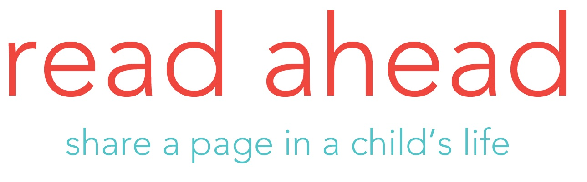

Columbia University - I currently attend Columbia University in the City of New York with an anticipated major in Computer Science. My expected graduation date is May 2023.
Activities
At Columbia I partake in a few clubs and organizations, I have listed most of them below:

Bacchanal - I am a member of Columbia University's largest music event organization, Bacchanal. I am the tech chair on the e-board hat organizes the event and throws events under the organizations name.

The National Society of Black Engineers - I am the acting telecommunications chair for Columbia's NSBE chapter.NSBE allows me to connect with fellow African-American engineers within my college community as well as sharing studying resources and a safe place to express myself.
Read Ahead - I am a mentor with Read Ahead, an organization that connects adults and college students with underpriviledged elementary and middle school kids in Morningside Heights.
To download my full resume, please click the icon